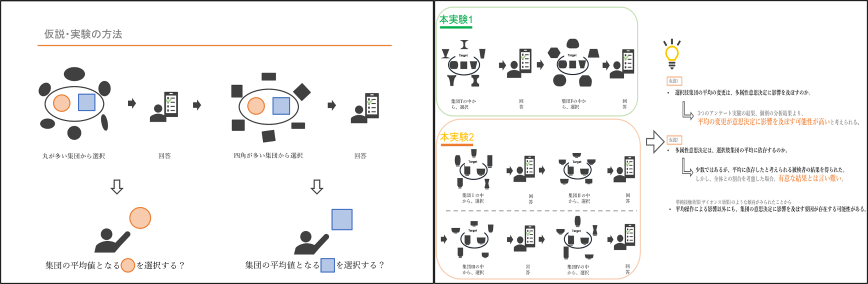
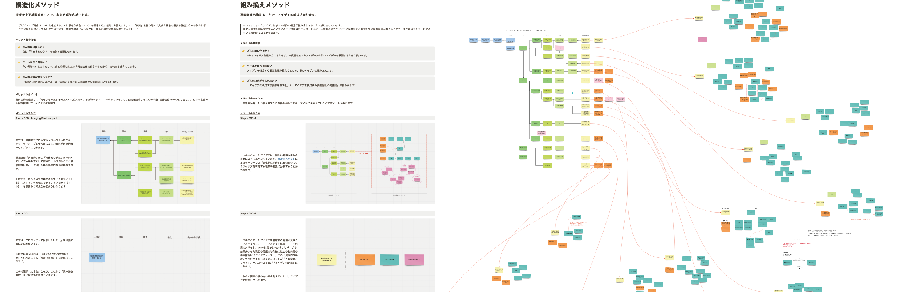
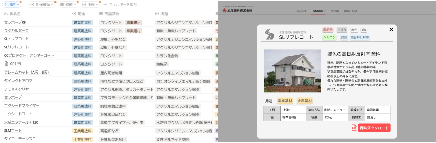
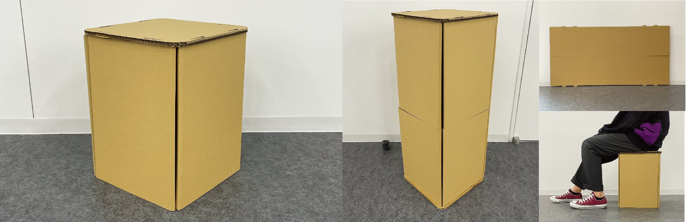
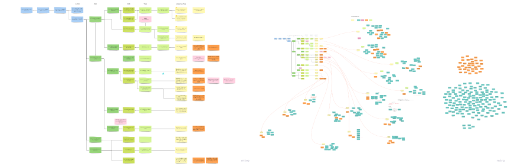
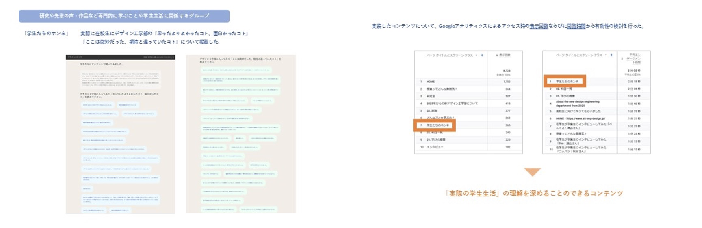
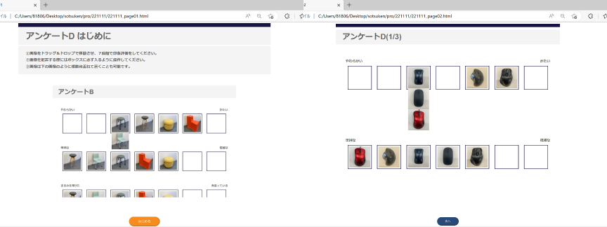
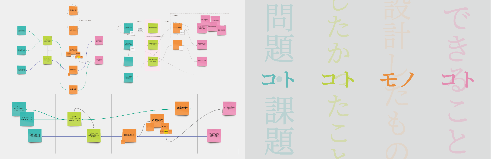
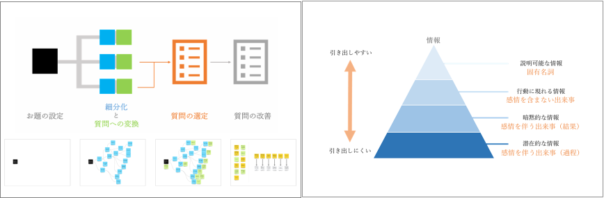
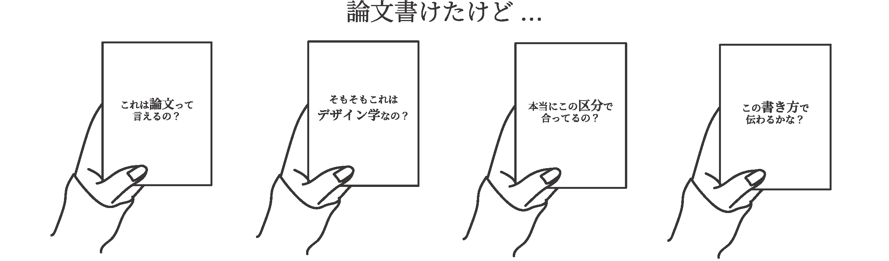

Research
デザインプロモーション研究室
蘆澤 雄亮 教授
隠れた要因を「見える化」してシステムで解決する
デザインや商品開発の現場では、日々様々な改善が行われています。ですが、様々な問題の根底には開発工程や意思決定手順、調査方法、分析方法など、全体のマネジメント方法にボトルネックが存在しているケースが間々あります。当研究室では、こうした「開発現場の全体的なシステムの中に内在する問題点」を明らかにし、解決する方法論を構築することが主なテーマになります。
-

他の選択肢が意思決定に与える影響の解明
内田 皇貴 -

総合的なUXデザイン・メソッドの開発
- 発想支援を中心に -
牧野 純也 -

ウェブサイト制作時における情報整理に関する研究
金城 秀都 -

パーツ数が少なく、加工工数の少ない段ボール家具の提案
山本 萌人 -

総合的なUXデザイン・メソッドの開発
伊志嶺 大輝 -

実装を念頭においたデザイン工学部特設ウェブサイトコンテンツ提案
猪股 桃子 -

SD法において印象評価を行う実験用GUIの提案
岩﨑 百音 -

プレゼンテーションの構成に関する研究
中川 采香 -

潜在的な情報を得るためのアンケート作成手法の提案
藤方 渓心 -

「デザイン学研究」における論文の査読観点に関する検討
鈴木 遥香